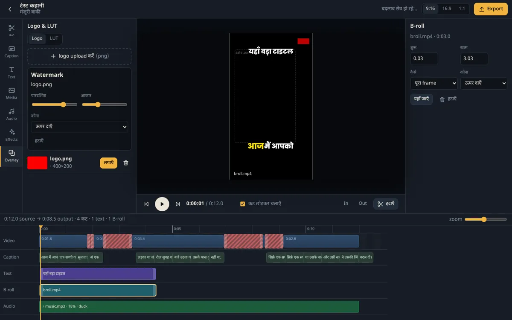

How it works
Check the trend radar, pick an idea, get a script in your voice. Or skip it — you know what you want to say.
Phone or camera, any format. Upload from anywhere; it resumes if the connection drops.
Vividora transcribes, cuts and captions. You check the timeline, fix a word, pick a style, add B-roll or music.
One click → 16:9 for YouTube, 9:16 for Shorts, Reels. Shorts factory makes the clips. Everything on your own hardware.
Watch the output, say "ok" on WhatsApp or the dashboard, publish with generated titles. Analytics close the loop.
